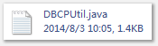
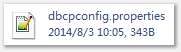
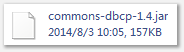
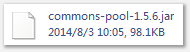
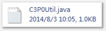
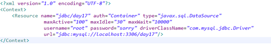

开元数据源的使用1、DBCPa、需要的jar：commons-dbcp.jar commons-pool.jarb、设置配置文件
c、编写一个工具类



2、C3P0
a、考jar包
b、写配置文件
c、编写一个工具类

3、JNDI(tomcat服务器)
一般服务器都是通过JNDI存放数据源的。数据源的配置。
3.1配置Tomcat管理的数据源
a、把数据库驱动拷贝Tomcat\lib目录中
b、在应用的META-INF目录下，建立一个名称为context.xml的配置文件，内容如下：

c、部署应用，启动Tomcat，服务器就会按照配置在JNDI容器中注册数据源的实例。
d、获取数据源
利用JNDI的API（JDK：javax.naming.*）把数据源根据path+name查询出来。